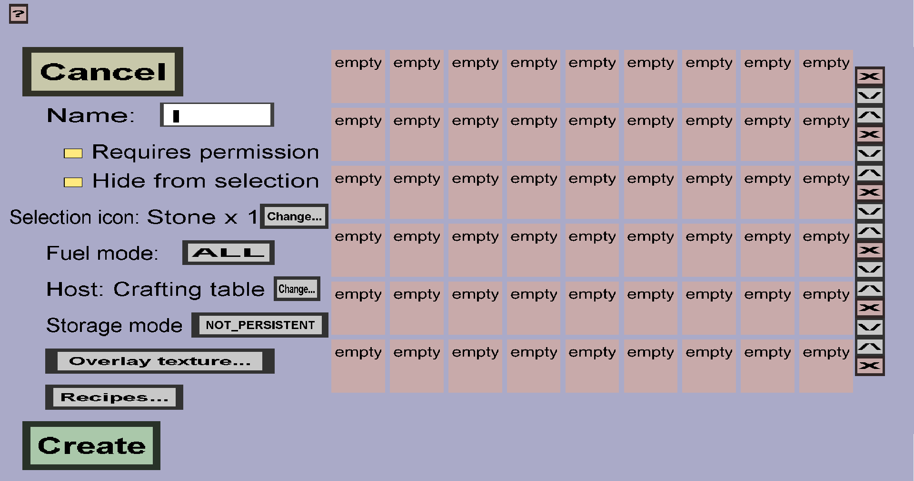

The container edit menu can be used to create or modify custom containers. Custom containers are basically custom versions of furnaces, but with many possibilities. The container will have a chest-like inventory menu. You will be the one who decides which purpose each of the slots will have (input, fuel, output, decoration, or indicator). Using fuel is optional and you can use any number of input and output slots. The slot creation menu has more detailed information about all types of slots. You will also need to give the container its own recipes. The recipes define which items should be in which input slots to produce which items in which output slots, and how long it will take.
If you just started creating a new (emtpy) custom container, it should look like this:
The Host block and Selection icon determine how players can open this custom container. The Host can be a vanilla container, a vanilla block, a custom block, or nothing.
If multiple custom containers have the same host block, interacting with the host block will instead take the player to a simple inventory menu where they can choose which container to open. The inventory menu will have an item stack for each of custom container with that host. The Selection icon will determine which item stack will represent the custom container in that menu.
Also, the display name of the selection icon will be used as the title of the container inventory/menu, regardless of how many containers share the same host.
Click on the 'Change...' button on the right of 'Selection icon:' to choose a selection icon for this container. This will take you to the slot display creation menu where you can choose the (new) selection icon.
The 'Change...' button on the right of 'Host: ...' will take you to the container host selection menu, where you can choose a new host block for this custom container.
Finally, there is the slot grid, which occupies most of the space in this menu. Every slot in this menu represents a single slot in the inventory/menu of the custom container in-game. The number of columns will always be 9 (a minecraft inventory restriction) and the number of rows in-game will be equal to the number of rows in this menu (which you can control).